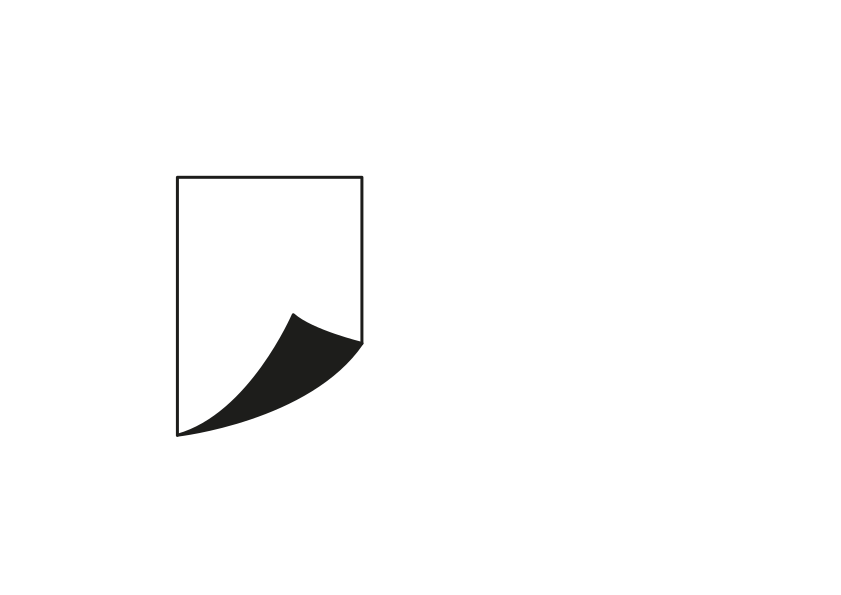

Three treatments of the page outline and curved launch stroke in Logo 1.svg. Compare them at home screen size before choosing a direction. These are prototypes, not production assets.

A tall page outline and a sweeping lower stroke. The source's landscape artboard and hairline weight leave the mark too small for an icon.